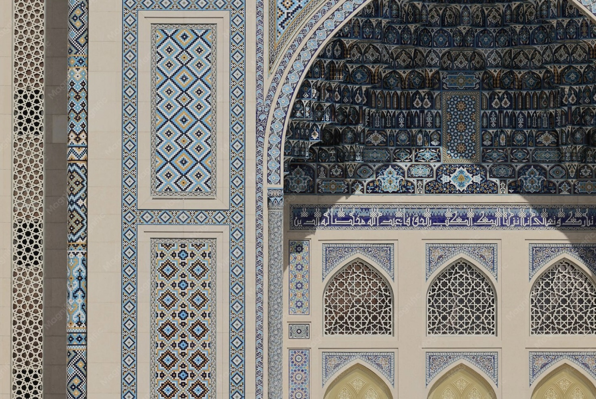

Project Overview
This project explores how RDF, SPARQL, and knowledge graph technologies can be used to represent and enrich cultural heritage information related to the Mausoleum of Khoja Ahmet Yassawi, one of the most important Islamic monuments in Central Asia.
Using Wikidata, RDF triples, SPARQL queries, and Large Language Models, we investigated existing knowledge gaps and proposed new semantic descriptions that better represent the religious, historical, and cultural significance of the monument.
Research Objectives
Analyse existing Wikidata information about the mausoleum.
Identify semantic gaps in the current knowledge graph representation.
Use SPARQL queries to explore structured data.
Compare ChatGPT and Gemini through three prompting techniques.
Propose RDF triples for Wikidata enrichment.
Publish the results as a GitHub Pages academic website.
Visual Context


Website Sections
LLM Comparison
ChatGPT and Gemini were evaluated using Zero-shot, Few-shot, and Chain-of-Thought prompting.
| Prompt Type | ChatGPT | Gemini | Assessment |
|---|---|---|---|
| Zero-shot | Focused and concise | Detailed and contextual | Both relevant |
| Few-shot | Structured output | Strong adaptation | Improved consistency |
| Chain-of-Thought | Most aligned | Most exploratory | Best overall result |